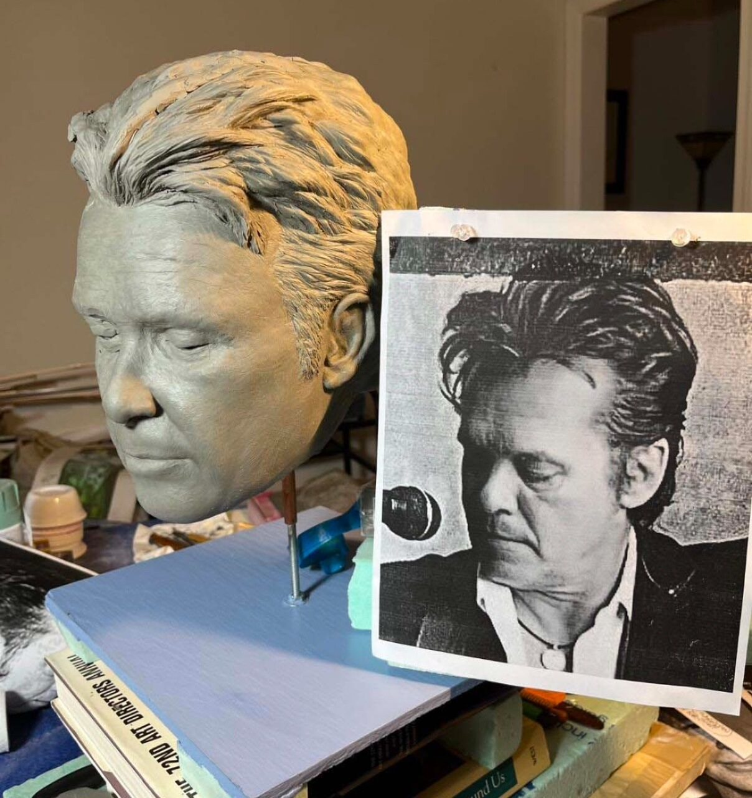
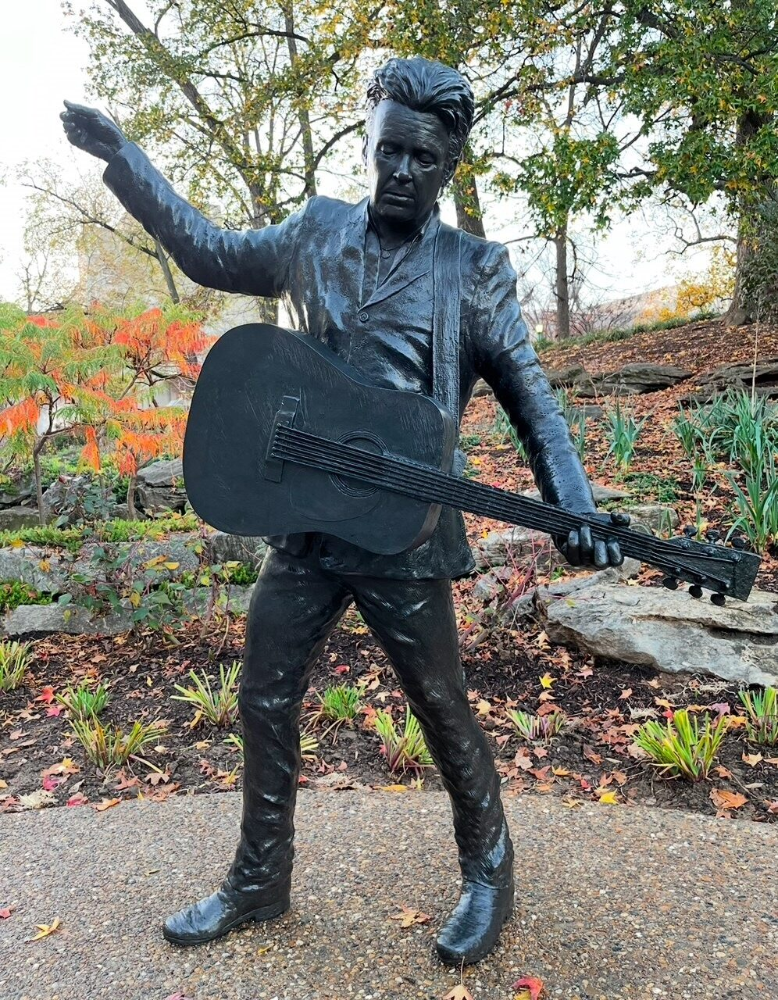

As McAuley puts it, everyone’s brother is a painter. But no one knows a sculptor.
The sculpted head of John Mellencamp in clay sits next to a photo of him Aug. 14, 2024 at Livingston Designs Sculpture Studio. The finished sculpture of Mellencamp was unveiled on IU’s campus in October of last year.
Sculpting requires more tools, a live model to pay out of your own pocket, the patience to fail and try again. Not many people can do what he does, especially when only given a photograph to work from, and when the person you are hoping to bring to life is still living and will personally evaluate it.
The statue was unveiled in Bloomington’s campus on Oct. 18 of this year. Mellencamp made an appearance for the occasion, smiling for photos and singing a few songs for those who gathered. Mellencamp’s bronze figure now rests forever outside the IU Auditorium next to Hoagy Carmichael, his left arm holding the neck of his acoustic guitar and his right arm held up, ready to strum.
The finished sculpture of John Mellencamp sits outside the IU Auditorium on Oct. 22, 2024. At the unveiling, Mellencamp sang songs for those in attendance.
When McAuley sculpted Carmichael for IU in 2008, he had complete artistic freedom. He got to choose the age in which he would appear, the pose he deemed most Hoagy-like.
The Mellencamp assignment was much stricter. His agent gave McAuley a photograph taken recently and said this is how he wanted to be depicted. This was after McAuley had already prepared a presentation where he explained the public might find it more iconic to see a young Mellencamp as he was creating his hit songs.
McAuley saw Mellencamp in concert once or twice, he can’t remember. They are only three years apart in age, with McAuley turning 70 this year, and both have been residents of Bloomington. The sculpture is what ultimately tethered them together. He knew he couldn’t mess this up.
“I respect Mellencamp as an artist, as a songwriter, because you know me, I use clay,” McAuley said. “And he uses words like I use clay.”
His mother a creative and his dad a mathematician, the values of art and perfection were instilled in McAuley when he was born.
“With my father, everything was black and white,” McAuley said. “There are no gray areas. When he would shovel the snow off the driveway, it had to be a perfectly straight line. No snow on the pavement, always on the grass.”
McAuley knows no life without art. His mother and grandmother were always painting and crafting. He drew a lot in high school and worked with clay when he could. During those years, he bought motorcycle parts from his friend for $25 and put it together himself.
“The motorcycle was a machine, 3D,” McAuley said. “And clay, I could make anything I wanted out of that clay. So, after making that motorcycle we will say, and enjoying the freedom, it gave me the freedom I have in art. It brought me great exhilaration.”
The plaque honoring John Mellencamp with lyrics from his hit song “Small Town” is embedded in stone by his statue at the IU Auditorium. Mellencamp received an honorary doctorate from the university in 2000.
For years, he rode on the wooded trails behind his home, occasionally venturing onto the road. He described it as freedom, wherever it would take him.
He sold his motorcycle to go to college for art and hasn’t ridden one since.
In college at IU, his pottery classes were his favorite because he enjoyed the manliness of working with his hands and making mistakes, changing and adding things to the clay as he worked.
The beginnings of a bronze sculpture are in clay. McAuley sculpted Mellencamp with it, then sent it to a foundry to be cast in bronze.
McAuley says that setting a sculpture cast in bronze is difficult, especially in the midwest, because it is essentially a desert for foundries. You must find a foundry you trust, which is where they melt bronze and pour it into a cast after they have melted the wax out of an intermediary plaster form.
Once finished, few adjustments can be made; it will remain as it is forever. This is his reputation. This is his livelihood.
The pressure to make his sculptures perfect wakes him up at night.
To ensure accuracy and to confirm his reputation of being an artist of high integrity, McAuley hung up posters outside his bathroom door showing the anatomy of a human ear and the muscle groups of the face. No two ears are the same, but he says they all share a certain unity.
The ears and the face are the hardest to get right. If you get the face wrong, you get the person wrong.
Sculpting the body of a person is easy enough, if you have a model to stand still for you. The model must have the same body type as your subject and be willing to wear whatever clothes they are given.
Finding Mellencamp’s body, however, proved to be a great challenge.
McAuley stood across the street from the nearest Starbucks for hours to scout out someone willing to do the job. He was turned down by every guy he found whose body could resemble the famous singer’s, feeling humiliated. Eventually, someone responded to his Facebook notice.
He didn’t mind so much that the model’s body didn’t match - he was able to sculpt his legs and cut them down from there, and he used his knowledge of anatomy to change the body type to Mellencamp’s.
Down the hall from the bathroom, a room with glass windows and a sliding door sits cluttered with art, some finished and some awaiting his delicate hand. The room smells of paint with no visible source. An empty black platform sits near the back of the room, where the bronze Mellencamp once stood holding his guitar.
As McAuley puts it, everyone’s brother is a painter. But no one knows a sculptor.
The finished sculpture of John Mellencamp sits outside the IU Auditorium on Oct. 22, 2024. At the unveiling, Mellencamp sang songs for those in attendance.
He is relieved to be done with it, proud of what he produced. He now works on a piece for an art show, a circular clay sculpture he calls Madonna and Child based on the sculpture The Virgin and Child with Infant Saint John by Michelangelo himself.
McAuley takes inspiration from Michelangelo, as all great sculptors do. He is a Christian, like him. He prays for the good of the world and the safety of his mother. He prays for himself and his nation, for the good that he wants to see in everything.
He sculpts with a photograph of Michelangelo’s original Virgin and Child sitting on the table beneath him.
Michelangelo’s piece depicts a young Jesus laid in the arms of Mary with a young John The Baptist holding out a baptismal bowl to her. McAuley’s takes the same circular shape, but instead is set on a beach with Mary wearing a swimsuit and baby Jesus snug inside an inner tube with goggles on his head. John The Baptist is awaiting to take full shape, but when he is finished he will bare a mischievous grin and tease Mary with a locust.
McAuley’s hair is gray. His tools are tiny, silver and sharp. The table they rest on is covered in a blue tarp, stained in clay. He works slowly, sometimes listening to the radio to avoid the starkness of silence. His choice of rhythm is light, classical or jazz or ‘70s music.
He was listening to the radio the day he feared most for his reputation.
It was the morning broadcast of his favorite Indianapolis station, and the two hosts were talking about the new John Mellencamp statue down in Bloomington.
They said the statue didn’t look like him. That is the worst thing a figurative sculptor can hear.
McAuley emailed them immediately.
“I said, I listen to you every morning, I love your commentary on life and politics, but I really think you missed the boat on this one,” McAuley said. “I was given a photograph to work from, and here is a picture of him right beside the head. People are influenced by you and what you say. I wish you had done more research before you made a comment on something you are aesthetically ill prepared to comment on.”
He kept listening to the station in the following mornings in hopes they would retract their statement, but if they did he didn’t hear it. He has seen similar remarks in the comment sections of news articles.
He wishes people had studied the aged version of Mellencamp’s face as he had. He knows he followed the photograph exactly. He knows the statue is one he should be proud of because Mellencamp himself thanked him.
The letter from Mellencamp was short, but it was all he wanted. It read: “Michael, thank you for your work, and your eye, to the sculptor.”
As he worked on Mellencamp, he viewed his anatomy references time and time again, walking back and forth between the door and the studio where John stood atop his platform. In the hallway between them, sculptures of his past line the walls.
During his bathroom breaks, he could reach for the aged book atop the toilet bowl which detailed the lives and artworks of famous sculptors like Michelangelo and Raphael.
When he washed his hands, he could read the bible verse he taped to the bathroom mirror: “He who humbles himself will be exalted - and he who exalts himself will be humbled.”
With the Mellencamp profits, part of his compensation went into savings and the other part was reserved for non-essentials. He never married, never had children. He is free to do as he pleases with the funds and his free time.
He thinks he will buy a motorcycle.
Like what you're reading?
Support independent, award-winning student journalism.
Donate.